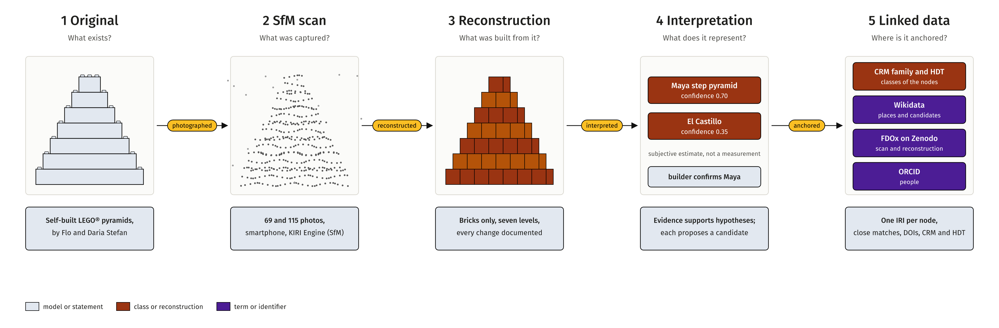

Figures
Twelve figures in four categories. Every figure is drawn from the graph and checked for overlaps by the figures step; open a category for the large version with caption, note and downloads.
Big picture
What the project is: from the physical pyramid to the Linked Open Data cloud, how the layers fit together and how the repository builds them.

Data model
The classes and how the three modules hang together: scan and reconstruction, identification, packaging.


CIDOC CRM
Where every class sits in the CRM family and in the other vocabularies.

Pyramids
The two LEGO pyramids as instances: what was measured, estimated, reconstructed and interpreted, and what they are linked to.